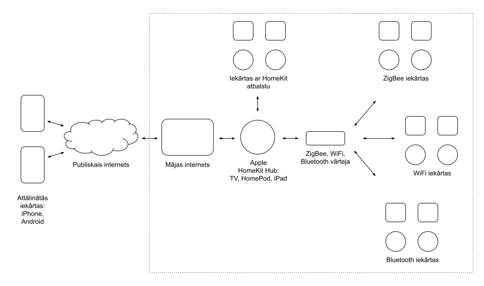

Mūsdienās ir tūkstotis un viens veids, kā pievienot savai mājai un dzīvoklim gudrību un attālinātu kontroli. Katrs iekārtu ražotājs grib to padarīt par vienkāršu procesu, tāpēc pirmās iekārtas izvēle var noteikt visas sistēmās attīstības potenciālu, jo savā starpā tās bieži nav savietojamas.
Izmantojot atvērtā koda programmatūru un pašu komplektētas iekārtas, ir iespējams izveidot sistēmu, kas atbalsta praktiski jebkura ražotāja iekārtas, taču ne visiem ir laiks, ko tam veltīt. Tāpēc praktiskāk ir izvēlēties kādu no lielo tehnoloģiju uzņēmumu ekosistēmām un samierināties ar daļu funkcionalitātes, ko tā neatbalsta.
Tā kā variantu ir tik daudz, tad zemāk apskatīsim konkrētas sistēmas piemēru, kas labi ilustrē arī citu platformu galvenās sastāvdaļas.
Sistēmas sastāvdaļas
Definējot sensoru un iekārtu veidus, ko vēlamies kontrolēt un uzraudzīt, ir vieglāk izvēlēties arī pārējas sistēmas sastāvdaļas. Piemēram:
- Kustības, apgaismojuma, temperatūras, mitruma un ūdens noplūdes sensori, gaismas spuldzes un slēdži, kas izmanto ZigBee bezvadu saziņas protokolu.
- ZigBee vārteja jeb “hub” ar Apple HomeKit atbalstu, kas ļauj piekļūt šiem sensoriem no sava telefona vai datora. Svarīgi, ka viena ražotāja vārtejas pārsvarā neatbalsta citu ražotāju ZigBee iekārtas.
- Apple HomeKit vārteja iekārtu automatizācijai un attālinātai piekļuvei, kad atrodies ārpus mājas.
- Patstāvīgs interneta pieslēgums ar WiFi tīkla atbalstu, kas ir pieejams jau gandrīz katrā mājā. Der arī mobilā interneta pieslēgums.
Vizuāli tas izskatās aptuveni šādi:

Iekārtu saziņa un barošana
Tā kā WiFi saziņa patērē relatīvi daudz enerģijas, tad gudrās mājas bezvadu sensori pārsvarā izmanto mazākas jaudas radio protokolus, kas ļauj tās darbināt ar baterijām, kas ilgst pat vairākus gadus.
Populārākie bezvadu saziņas protokoli ir ZigBee, Z-wave, Bluetooth LE un Matter (vēl attīstības stadijā). Piemēram, Ikea, Xiaomi un Aqara pārsvarā izmanto Zigbee, bet ASV ir populārs Z-wave.
Šeit ir saraksts ar vairāk kā 2000 ZigBee iekārtām, ko atbalsta atvērtā koda programmas Tasmota, Zigbee2Mqtt, utt.
Lai kontrolētu iekārtas, kas izmanto šos mazas jaudas saziņas protokolus, ir nepieciešama:
- vārteja, kas pārveido pieprasījumus no tava telefona un datora lietotnēm iekārtai saprotamā radio valodā.
- lietotne telefonā vai datorā, kas māk sazināties ar konkrēto vārteju, izmantojot lokālo tīklu vai interneta pieslēgumu.
Diemžēl tas, ka iekārtas izmanto vienu saziņas protokolu, nenozīmē, ka dažādu ražotāju iekārtas mācēs saprasties. Piemēram, Ikea lietotne un vārteja māk kontrolēt tikai savas iekārtas, bet Aqara lietotne un vārteja tikai savas iekārtas. Ir daudzi atvērtā koda projekti, kas atrisina šo problēmu un māk sarunāties ar praktiski visām populārākajām iekārtām (populārākais ir Home Assistant).
Ir iekārtas, kas kalpo kā “tilti” citiem iekārtu saziņas protokoliem un standartiem. Piemēram, Aqara Camera Hub G2H ir vārteja, kas māk sazināties ar visiem Aqara ražotajiem Zigbee sensoriem un iekārtām, kā arī padara tās pieejamas un kontrolējamas gan Apple HomeKit, gan Google Home platformās.
ZigBee, WiFi un Apple HomeKit
HomeKit ir Apple definēts standarts, kas nosaka, kā iekārtas ir pieejamas un kontrolējamas no tava Apple telefona, planšetes vai datora. Alternatīvas platformas ir Google Assistant, Aqara Home un Tuya Smart.
ZigBee ir bezvadu saziņas protokola standards, kas ļauj sensoriem patērēt ļoti maz enerģijas un barošanai izmantot baterijas. Zigbee standartu izmanto ļoti daudzi iekārtu ražotāji, taču svarīgi, ka viena ražotāja iekārtas parasti nav savietojamas ar cita ražotāja vārtejām.
Izvēloties Apple HomeKit platformu iekārtu vadīšanai un “gudrībai”, un Zigbee protokolu sensoru saziņai, esam definējuši galvenos gudrās mājās elementus, no kā ir atkarīgas arī mums pieejamās iekārtas.
Sistēmu piemēri
Sistēma ar Tuya vārteju un sensoriem
Tuya neražo savas iekārtas, bet licenzē programnodrošinājumu citiem ražotājiem, tāpēc to pieejamība ir visplašākā. Tuya iekārtas pārsvarā izmanto WiFi saziņas protokolu, taču arvien lielāka daļa atbalsta arī ZigBee un Bluetooth LE.
Svarīgi, ka tikai dažas vārtejas atbalsta Apple HomeKit platformu, kā piemēram Zemismart ZMHK-01 Hub.
Tuya piedāvā arī savu lietotni “Tuya Smart” un mākoņa pakalpojumu iekārtu attālinātai kontrolei, taču tā drošība nav zināma un potenciāli ir daudz švakāka par to, ko piedāvā Apple un Google.
Gan vietējos tīmekļa veikalos, gan AliExpress ir pieejams visplašākais Tuya iekārtu skaits, ko viegli kontrolēt ar Apple Home un Google Home lietotnēm, ja vien ir uzstādīta jau minētā vārteja.
Sistēma ar Aqara sensoriem un vārteju
Aqara savās iekārtās un vārtejās izmanto Zigbee, Bluetooth LE un WiFi protokolus. Aqara vārtejas atbalsta gan visus Aqara ZigBee sensorus, gan visas “Works with Apple HomeKit” un “Works with Google Assistant” iekārtas.
Pieejamas vairākas vārtejas, kas vienlaicīgi atbalsta gan Apple HomeKit, gan Google Home platformas:
- Aqara Hub E1 (€20) ir visvienkāršākā Zigbee vārteja, ko var iespraust interneta rūtera USB portā vai jebkurā USB lādētājā.
- Aqara Hub M2 (€50) ir vārteja ar visplašāko protokolu atbalstu.
- Aqara Camera Hub G3 un G2H (€50) ir vārteja ar iekštelpu kameru.
Būtiski, ka Aqara Home lietotne piedāvā uzstādīt un kontrolēt iekārtas arī izmantojot Aqara mākoņa risinājumu, taču to nebūtu ieteicams izmantot, jo tā drošība nav zināma. Uzstādot vārteju un pievienojot sensorus Aqara Home lietotnē, noteikti izmanto HomeKit režīmu!
Aqara piedāvā šādus Zigbee sensorus:
- temperatūra un mitrums,
- kustība un apgaismojums,
- vibrācijas,
- ūdens noplūde,
- durvju un logu atvēršana,
- gaisa kvalitāte.
Apple HomeKit attālinātā piekļuve
Jebkura no šīm Apple iekārtām māk kļūt par HomeKit vārteju, kas ļauj attālināti kontrolēt visu gudro māju:
- Apple TV 2021, €200.
- Apple HomePod, €120 (Latvijā to oficiāli nevar nopirkt, tāpēc jāpērk no tiešsaites veikaliem).
- Jebkurš iPad ar iOS 13 vai jaunāku versiju.
Mājas WiFi tīkla uzstādījumi
Vārtejas un WiFi sensori bieži atbalsta tikai 2.4GHz radio frekvenču diapazonu un nespēj pieslēgties jaunākās paaudzes 5GHz tīkliem, tāpēc svarīgi, ka mājas rūtera WiFi piekļuves punkta uzstādījumos ir iespējots 2.4GHz tīkls.
Labā prakse ir izveidot atsevišķu tīklu gudrās mājas iekārtu saziņai, kam nav pieeja drošajam iekšējam tīklam. Šis nav obligāti, taču teorētiski neļautu ļaundariem, kas piekļuvuši iekārtām, piekļūt arī pārējām iekārtām mājas tīklā.
Kā izvēlēties?
Lai arī daudzi iekārtu ražotāji piedāvā savas lietotnes un attālinātās kontroles sistēmas, tās pārsvarā ir relatīvi nedrošas un nav papildināmas ar citu ražotāju iekārtām. Tāpēc iesaku izvēlēties:
- Apple HomeKit, ja ģimene izmanto Apple iekārtas.
- Google Assistant, ja ģimene izmanto Android telefonus.
Alternatīva ir universālās vārtejas, kas cenšas atbalstīt visas iekārtas un platformas, un piedāvā savas lietotnes un attālinātu piekļuvi caur saviem mākoņiem, bet nav garantiju, ka pēc laika šīs platformas varētu izbeigt savu darbību. Populārākās ir:
Google ir vēsture ar projektu un pašu ražoto iekārtu pamešanu novārtā, tāpēc ilgtermiņa risinājumam drošs variants būtu Apple Home jeb HomeKit ekosistēma, ja tev jau ir, piemēram, iPhone telefons.